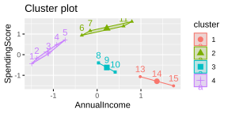
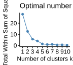
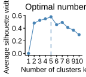

library(tidyverse)
library(cluster)
library(factoextra)Applying Cluster Analysis in R for Business Segmentation
Saketh Srigiri
Hochschule Fresenius University of Applied Sciences
Applying Cluster Analysis in R for Business Segmentation
1. Introduction
Organizations generate large volumes of customer data through transactions, online interactions, loyalty programs, and social media. However, this data becomes valuable only when meaningful patterns are identified. Cluster analysis, an unsupervised machine learning technique, groups similar observations to uncover natural customer segments and support data-driven decision-making (Gan et al., 2007; Hastie et al., 2009).
Business segmentation through clustering enables personalized marketing, customer relationship management, and efficient resource allocation across industries. Among clustering methods, K-means is widely used for its simplicity and efficiency, while R provides powerful tools for data pre-processing, visualization, and implementation, making it an ideal platform for customer segmentation and business analytics (Hastie et al., 2009; Wickham et al., 2023).
2. Business Applications of Customer Segmentation
| Industry | Segmentation Basis | Business Outcome |
|---|---|---|
| Retail | Purchase frequency, spending, preferences | Personalized promotions |
| Banking | Income, transactions, risk profile | Product recommendations, fraud detection |
| Telecommunications | Usage patterns, churn probability | Improved customer retention |
| E-commerce | Browsing and purchase behavior | Product recommendations, ad optimization |
3. K-means Clustering Algorithm
K-means partitions observations into K clusters by minimizing within-clusters variation (Hastie et al., 2009). The algorithm follows these steps:
- Select the number of clusters (K).
- Randomly initialize centroids.
- Assign each observation to its nearest centroid.
- Recalculate cluster centroids.
- Repeat until assignments stabilize.
Choosing the correct value of K is critical. Common methods include: - Elbow Method
Silhouette Analysis
Gap Statistic
4. Implementing Cluster Analysis in R
The following example demonstrates customer segmentation using R.
Step 1: Load Packages
Step 2: Create Sample Data
customers <- data.frame(
CustomerID = 1:15,
AnnualIncome = c(15, 18, 25, 30, 35, 45, 50, 55, 60, 65, 70, 75, 80, 90, 100),
SpendingScore = c(39, 45, 50, 60, 65, 70, 75, 40, 35, 30, 80, 85, 25, 20, 15)
)Step 3: Standardize Variables
scaled_data <- scale(customers[,2:3])Step 4: Run K-Means
set.seed(123)
km <- kmeans(
scaled_data,
centers = 4,
nstart = 25
)Step 5: Visualize Clusters
fviz_cluster(
km,
data = scaled_data
)
The visualization reveals two distinct customer groups representing higher-income, lower-income, higher-spending, and lower-spending patterns.
5. Advantages and Limitations
Advantages: Simple to implement, fast on large datasets, easy to interpret. Limitations: K must be chosen in advance, assumes spherical clusters.
6. Evaluating Cluster Quality
One of the most crucial stages in cluster analysis is figuring out the ideal number of clusters. While choosing too many clusters could lead to needless complexity and decreased interpretability, choosing too few clusters could merge different client groups. Cluster quality is assessed using a number of statistical methods.
6.1 Elbow Method
The Elbow Method plots WCSS against K values — the optimal K appears where the curve bends (Hastie et al., 2009). If the elbow appears at K = 3, then three clusters may provide the best balance between simplicity and explanatory power.
library(factoextra)
fviz_nbclust(
scaled_data,
kmeans,
method = "wss"
)
6.2 Silhouette Analysis
Silhouette scores range from -1 to 1, where values close to 1 indicate well-defined clusters (Rousseeuw, 1987). This method often provides a more reliable estimate of the optimal number of clusters than relying solely on visual inspection.
fviz_nbclust(
scaled_data,
kmeans,
method = "silhouette"
)
6.3 Business Interpretation of Clusters
The true value of clustering lies not only in identifying groups but also in translating those groups into actionable business strategies. Managers can use these insights to allocate marketing budgets more effectively and improve customer retention.
| Customer Segment | Characteristics | Business Strategy |
|---|---|---|
| Budget Customers | Low income, low spending | Offer discounts and promotional bundles |
| Cautios Savers | High income, low spending | Highlight value for money and cashback offers |
| Aspirational Customers | Low to moderate income, high spending | loyalty programs and installment payment options |
| Premium Customers | High income, high spending | VIP memberships and personalized services |
7. Conclusion
Cluster analysis is a powerful unsupervised learning technique that helps organizations identify hidden patterns in customer data. Using R and algorithms such as K-means, businesses can group customers based on demographics or purchasing behavior to support targeted marketing and better decision-making. Effective implementation requires proper data pre-processing, standardization, and evaluation using methods like the Elbow Method and Silhouette Analysis. When combined with business knowledge, cluster analysis provides valuable insights that improve customer satisfaction and enhance organizational competitiveness.
Affidavit
I hereby affirm that this submitted paper was authored unaided and solely by me. Additionally, no other sources than those in the reference list were used. Parts of this paper, including tables and figures, that have been taken either verbatim or analogously from other works have in each case been properly cited with regard to their origin and authorship. This paper either in parts or in its entirety, be it in the same or similar form, has not been submitted to any other examination board and has not been published.
Checklist:
Saketh Srigiri, 16 June 2026, Cologne
References
Gan, G., Ma, C., & Wu, J. (2007). Data clustering: Theory, algorithms, and applications. SIAM. https://doi.org/10.1137/1.9780898718348
Hastie, T., Tibshirani, R., & Friedman, J. (2009). The Elements of Statistical Learning: Data mining, Inference, and Prediction (Second). Springer. https://hastie.su.domains/ElemStatLearn/
Rousseeuw, P. J. (1987). Silhouettes: A Graphical Aid to the Interpretation and Validation of Cluster Analysis. Journal of Computational and Applied Mathematics, 20, 53–65. https://doi.org/10.1016/0377-0427(87)90125-7
Wickham, H., Çetinkaya-Rundel, M., & Grolemund, G. (2023). R for Data Science (Second). O’Reilly Media. https://r4ds.hadley.nz